xmin <- 37
xmax <- 49
ymin <- 68.5
ymax <- 70.54 Основы картографии
4.1 Введение
Это занятие — про то, как превратить координаты и уловы в честные карты, которые помогают думать, а не просто украшать отчёт. Мы будем работать в R, потому что он дисциплинирует: каждая операция видна, воспроизводима и проверяема, а любой красивый результат можно разобрать до строчки кода. В логике курса мы пойдём от простого к сложному: от базовой точечной карты распределения уловов — к картам с береговой линией, к учёту нулевых уловов и разбиению по квартилям, к фасетам для сравнения лет, к локальной автокорреляции (LISA), к промысловым картам и картограммам, и, наконец, к гибридным решениям, где данные съёмок и промысла встречаются на одной карте. В конце добавим «служебные» карты для раздела «Материал и методы» и карты с врезками — тот самый минимум, который ожидают рецензенты. В духе Ноама Хомского напомним: карта — это не территория, а модель наших предположений; чем прозрачнее исходные решения (данные, проекция, шкалы), тем меньше поводов для самообмана.
В основе любой качественной карты лежат три вещи: корректная подготовка данных, грамотная картографическая основа и осмысленная визуальная метафора. Сначала убеждаемся, что координаты в единой системе (WGS84), отсутствуют перепутанные долготы и широты, а нулевые уловы размечены как нули, а не пропуски. Затем выбираем основу: береговая линия и полигоны стран из rnaturalearth, при необходимости батиметрия из marmap, корректная проекция для расстояний и площадей (в задачах локального масштаба — UTM). И только после этого — визуальные решения: непрерывные шкалы с воспринимаемо ровной палитрой (viridis), понятная легенда, единицы измерения, подписи, масштабная линейка и, где уместно, стрелка «север». Важный этический момент: размер и цвет несут разные смыслы; не заставляйте читателя угадывать, что из них интенсивность, а что — частота или категория. Нулевые уловы — это не «мусор», а сильный сигнал об отсутствии; показывайте их отдельным слоем и символом, чтобы не переоценивать «горячие точки».
По мере усложнения задач мы добавляем структуру. Разбиение по квартилям даёт сопоставимость между годами, фасеты позволяют увидеть межгодовую динамику без наложения, LISA подсвечивает кластеры высокой и низкой интенсивности и аномалии, где значение точки расходится с окружением. Картограммы или сеточная агрегация помогают уйти от шумной точки к устойчивой картинке на уровне промысловых квадратов; гибридные карты честно показывают возможный разрыв между научной съёмкой и промыслом. Здесь важно помнить про «анатомию ошибки»: выбор размера ячейки, числа соседей в LISA, границ квартилей и способа агрегации — это не техническая деталь, а модельное решение; фиксируйте его явно, чтобы завтра вы сами могли воспроизвести сегодняшнюю карту.
Практический результат должен быть пригоден для публикации. Все примеры в R можно экспортировать в векторные форматы (PDF, SVG) и растровые (PNG, TIFF) с высоким разрешением, где подписи, легенды и цвета сохраняют читаемость при печати. В скрипте мы покажем, как автоматически подбирать границы области с небольшим буфером — и почему чаще лучше задать их вручную, чтобы карта не «гуляла» между рис. 1 и рис. 2. Мы разберём, как организовать легенды, чтобы они не спорили друг с другом при фасетировании, как синхронизировать цветовые шкалы между годами, чтобы зелёное «вчера» и зелёное «сегодня» значили одно и то же, и как использовать врезку, чтобы читатель понял контекст региона, а не искал его на глобусе.
Наконец, про дисциплину и воспроизводимость. Данные берём из одного файла (KARTOGRAPHIC.xlsx), зависимости минимальны и явно перечислены, рабочая директория задаётся в начале, все параметры карт — на виду. Такой стиль не только ускоряет работу, но и воспитывает привычку проверять себя: если карта получилась слишком «красивая», вернитесь и взгляните на нули, на шкалы, на проекцию, на подписи. Хорошая карта в рыбохозяйственной и гидробиологической практике — это не “арт‑объект”, а прозрачный инструмент коммуникации: с ней удобно спорить, её можно повторить и на её основе можно принять решение. Если к концу занятия вы без подсказок соберёте три‑четыре типовых карты для результатов и одну аккуратную для «Материалов и методов», задача занятия выполнена.
Для работы скрипта:
Скачайте файл данных (KARTOGRAPHIC.xlsx)
Установите рабочую директорию в setwd()
Установите необходимые пакеты :
install.packages(c("readxl", "tidyverse, "rnaturalearth", "sf", "viridis" ))и др.
4.2 Карта распределения уловов в съемке
Данная карта демонстрирует распределение уловов краба в ходе исследовательской съемки. На ней отображены точки наблюдений, где размер и цвет точек соответствуют величине улова.
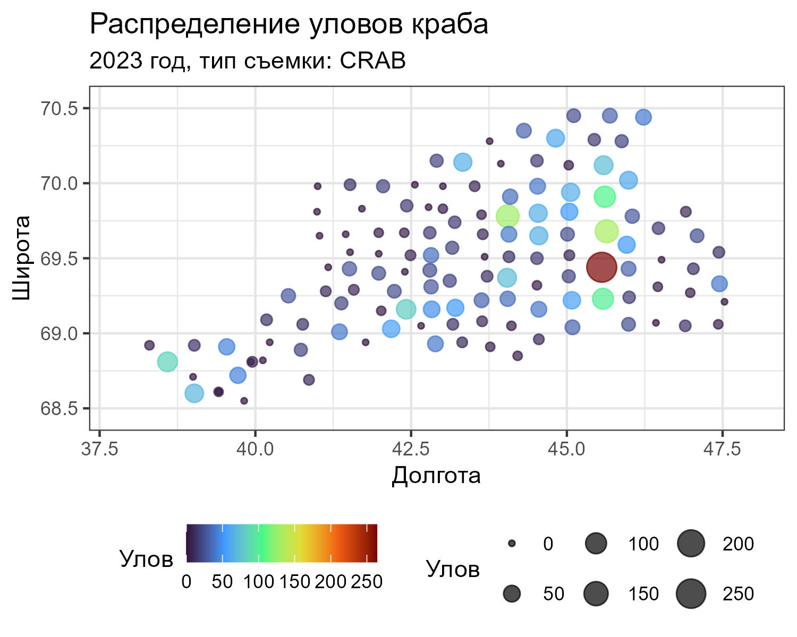
В скрипте границы карты (лимиты) определяются автоматически с буфером, но чаще их просто устанавливают вручную, например:
Скрипт карты целиком:
# Очистка памяти и установка рабочей папки
rm(list = ls())
setwd("C:/COURSES/KARTOGRAPH/")
# Загрузка необходимых пакетов
library(tidyverse) # Обработка данных и визуализация
library(readxl) # Чтение Excel-файлов
# 1. ЗАГРУЗКА ДАННЫХ
DATA <- read_excel("KARTOGRAPHIC.xlsx", sheet = "SURVEY") %>%
filter(YEAR == 2023, SURV == "CRAB") # Фильтр для 2023 года и съемки CRAB
# 2. АВТОМАТИЧЕСКИЙ РАСЧЕТ ГРАНИЦ С БУФЕРОМ 5%
# Расчет диапазонов координат
x_range <- range(DATA$X, na.rm = TRUE)
y_range <- range(DATA$Y, na.rm = TRUE)
# Расчет 5% буфера
x_buffer <- 0.05 * diff(x_range)
y_buffer <- 0.05 * diff(y_range)
# Установка границ с буфером
xmin <- x_range[1] - x_buffer
xmax <- x_range[2] + x_buffer
ymin <- y_range[1] - y_buffer
ymax <- y_range[2] + y_buffer
# 3. ВИЗУАЛИЗАЦИЯ ТОЧЕК
ggplot(DATA) +
# Точки наблюдений с размером и цветом по величине улова
geom_point(aes(x = X, y = Y, size = PROM, color = PROM), alpha = 0.7) +
# Цветовая шкала (виридисная палитра)
scale_color_viridis_c(option = "H", name = "Улов") +
# Шкала размеров точек
scale_size_continuous(name = "Улов") +
# Настройка границ с автоматически рассчитанными значениями
coord_cartesian(xlim = c(xmin, xmax), ylim = c(ymin, ymax)) +
# Подписи осей
labs(x = "Долгота", y = "Широта",
title = "Распределение уловов краба",
subtitle = "2023 год, тип съемки: CRAB") +
# Оформление графика
theme_bw() +
theme(
panel.grid = element_line(color = "grey90"),
legend.position = "bottom"
)4.3 Карта распределения уловов в съемке с береговой линией
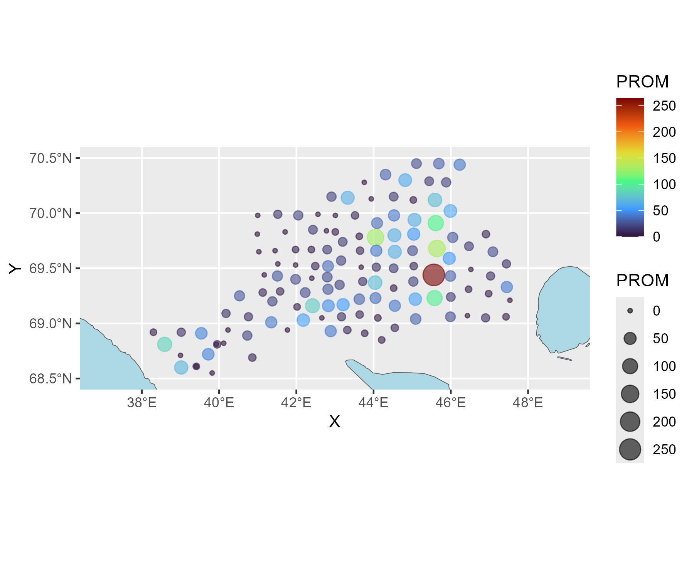
# Очистка окружения и установка рабочей директории
rm(list = ls()) # Удаление всех объектов из глобального окружения
setwd("C:/COURSES/KARTOGRAPH/") # Установка рабочей директории
# Загрузка необходимых библиотек
library(rnaturalearth) # Для получения векторных карт мира
library(tidyverse) # Коллекция пакетов для работы с данными
library(sf) # Пространственный анализ
####### ЗАГРУЗКА ДАННЫХ И ПОДГОТОВКА ПРОСТРАНСТВЕННЫХ ОБЪЕКТОВ ################
# Чтение и фильтрация данных
DATA <- readxl::read_excel("KARTOGRAPHIC.xlsx", sheet = "SURVEY") %>%
filter(YEAR == 2023, SURV == "CRAB") # Фильтр данных за 2023 год по типу съемки
# Получение границ России
russia <- ne_countries(scale = 10, country = "Russia") # Загрузка векторных границ (масштаб 1:10м)
# Установка границ отображаемой области (долгота/широта)
xmin=37 # Западная граница
xmax=49 # Восточная граница
ymin=68.5 # Южная граница
ymax=70.5 # Северная граница
# Построение карты
ggplot() +
# Базовая карта России
geom_sf(data = russia, fill = "lightblue") +
# Ограничение области отображения
coord_sf(xlim = c(xmin, xmax), ylim = c(ymin, ymax)) +
# Точки наблюдений с размером и цветом по переменной PROM
geom_point(aes(x = X, y = Y, size = PROM, color = PROM),
data = DATA, alpha = 0.6) +
# Цветовая шкала (viridis, вариант H)
scale_color_viridis_c(option = "H")4.4 Карта распределения уловов, включая нулевые
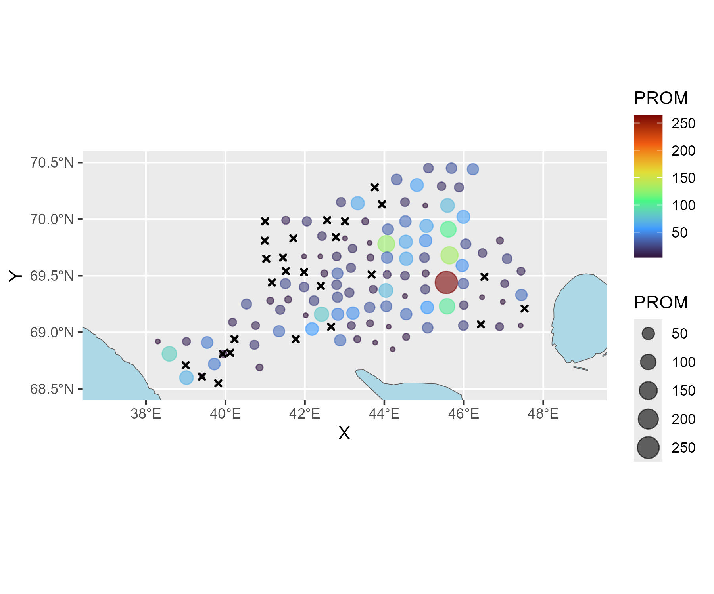
# Очистка окружения и установка рабочей директории
rm(list = ls()) # Удаление всех объектов из глобального окружения
setwd("C:/COURSES/KARTOGRAPH/") # Установка рабочей директории
# Загрузка необходимых библиотек
library(rnaturalearth) # Для получения векторных карт мира
library(tidyverse) # Коллекция пакетов для работы с данными
library(sf) # Пространственный анализ
####### ЗАГРУЗКА ДАННЫХ И ПОДГОТОВКА ПРОСТРАНСТВЕННЫХ ОБЪЕКТОВ ################
# Чтение и фильтрация данных
DATA <- readxl::read_excel("KARTOGRAPHIC.xlsx", sheet = "SURVEY") %>%
filter(YEAR == 2023, SURV == "CRAB") # Фильтр данных за 2023 год по типу съемки
# Получение границ России
russia <- ne_countries(scale = 10, country = "Russia") # Загрузка векторных границ (масштаб 1:10м)
# Установка границ отображаемой области (долгота/широта)
xmin=37 # Западная граница
xmax=49 # Восточная граница
ymin=68.5 # Южная граница
ymax=70.5 # Северная граница
# Построение карты
ggplot() +
# Базовая карта России
geom_sf(data = russia, fill = "lightblue") +
# Ограничение области отображения
coord_sf(xlim = c(xmin, xmax), ylim = c(ymin, ymax)) +
# Точки наблюдений с размером и цветом по переменной PROM (ненулевые уловы)
geom_point(aes(x = X, y = Y, size = PROM, color = PROM),
data = filter(DATA, PROM > 0), alpha = 0.6) +
# Точки для нулевых уловов (крестики)
geom_point(aes(x = X, y = Y),
data = filter(DATA, PROM == 0),
shape = 4, size = 1, stroke = 1, color = "black") +
# Цветовая шкала (viridis, вариант H)
scale_color_viridis_c(option = "H")4.5 Карта распределения уловов, распределенных по квартилям
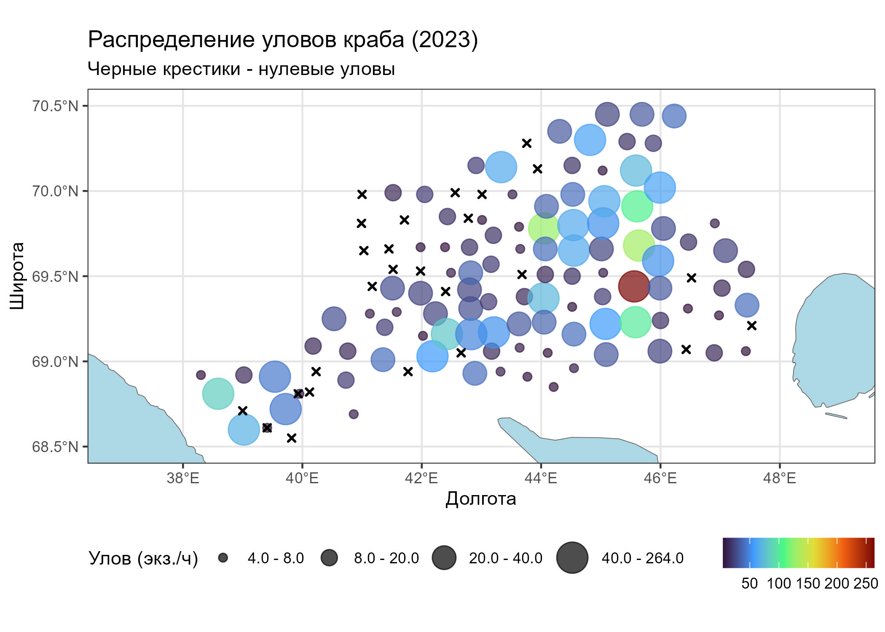
# Очистка окружения и установка рабочей директории
rm(list = ls())
setwd("C:/COURSES/KARTOGRAPH/")
# Загрузка необходимых библиотек
library(rnaturalearth)
library(tidyverse)
library(sf)
####### ЗАГРУЗКА ДАННЫХ И ПОДГОТОВКА ПРОСТРАНСТВЕННЫХ ОБЪЕКТОВ ################
# Чтение и фильтрация данных
DATA <- readxl::read_excel("KARTOGRAPHIC.xlsx", sheet = "SURVEY") %>%
filter(YEAR == 2023, SURV == "CRAB")
# Получение границ России
russia <- ne_countries(scale = 10, country = "Russia") %>%
st_as_sf()
# Установка границ отображаемой области
xmin=37; xmax=49; ymin=68.5; ymax=70.5
####### ПОДГОТОВКА ДАННЫХ ДЛЯ ВИЗУАЛИЗАЦИИ ################
# Вычисляем квартили отдельно
quantiles <- quantile(DATA$PROM[DATA$PROM > 0], probs = seq(0, 1, 0.25))
# Создаем 4 категории с реальными диапазонами значений
nonzero_data <- DATA %>%
filter(PROM > 0) %>%
mutate(
PROM_cat = cut(
PROM,
breaks = quantiles,
include.lowest = TRUE,
labels = c(
sprintf("%.1f - %.1f", quantiles[1], quantiles[2]),
sprintf("%.1f - %.1f", quantiles[2], quantiles[3]),
sprintf("%.1f - %.1f", quantiles[3], quantiles[4]),
sprintf("%.1f - %.1f", quantiles[4], quantiles[5])
)
)
)
# Построение карты
ggplot() +
# Базовая карта России
geom_sf(data = russia, fill = "lightblue", color = "gray40") +
# Ограничение области отображения
coord_sf(xlim = c(xmin, xmax), ylim = c(ymin, ymax)) +
# Точки наблюдений с категориальным размером
geom_point(
data = nonzero_data,
aes(x = X, y = Y, size = PROM_cat, color = PROM),
alpha = 0.7
) +
# Точки для нулевых уловов (крестики)
geom_point(
data = filter(DATA, PROM == 0),
aes(x = X, y = Y),
shape = 4, size = 1.2, stroke = 1, color = "black"
) +
# Цветовая шкала (непрерывная)
scale_color_viridis_c(option = "H", name = NULL) +
# Ручная настройка размеров для категорий
scale_size_manual(
name = "Улов (экз./ч)",
values = c(2, 4, 6, 8), # Размеры точек для категорий
drop = FALSE
) +
# Настройки темы
theme_bw() +
labs(
title = "Распределение уловов краба (2023)",
subtitle = "Черные крестики - нулевые уловы",
x = "Долгота",
y = "Широта"
) +
theme(
panel.grid = element_line(color = "gray90"),
legend.position = "bottom"
)4.6 Карта распределения уловов по фасеткам
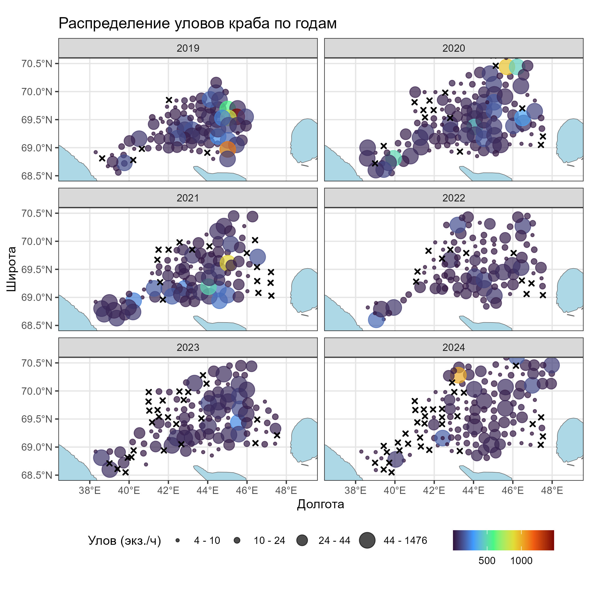
# Очистка окружения и установка рабочей директории
rm(list = ls())
setwd("C:/COURSES/KARTOGRAPH/")
# Установка и подключение библиотек (если не установлено — раскомментируй)
# install.packages(c("rnaturalearth", "tidyverse", "sf", "readxl", "viridis"))
library(rnaturalearth)
library(tidyverse)
library(sf)
library(readxl)
library(viridis)
####### ЗАГРУЗКА ДАННЫХ И ПОДГОТОВКА ПРОСТРАНСТВЕННЫХ ОБЪЕКТОВ ################
# Чтение и фильтрация данных (убираем фильтр по году, чтобы работать со всеми годами)
DATA <- readxl::read_excel("KARTOGRAPHIC.xlsx", sheet = "SURVEY") %>%
filter(SURV == "CRAB")
# Получение границ России
russia <- ne_countries(scale = 10, country = "Russia") %>%
st_as_sf()
# Установка границ отображаемой области
xmin <- 37; xmax <- 49
ymin <- 68.5; ymax <- 70.5
# Вычисляем общие квартили для всех лет (чтобы категории были сопоставимыми)
quantiles <- quantile(DATA$PROM[DATA$PROM > 0], probs = seq(0, 1, 0.25))
# Создаем данные с ненулевыми уловами и категориями
nonzero_data <- DATA %>%
filter(PROM > 0) %>%
mutate(
PROM_cat = cut(
PROM,
breaks = c(-Inf, quantiles[2:4], Inf),
include.lowest = TRUE,
labels = c(
sprintf("%d - %d", floor(quantiles[1]), floor(quantiles[2])),
sprintf("%d - %d", floor(quantiles[2]), floor(quantiles[3])),
sprintf("%d - %d", floor(quantiles[3]), floor(quantiles[4])),
sprintf("%d - %d", floor(quantiles[4]), floor(max(DATA$PROM)))
)
)
)
# Отдельно выделяем точки с нулевым уловом
zero_data <- DATA %>% filter(PROM == 0)
####### ВИЗУАЛИЗАЦИЯ ################
# Фасеточная карта по годам
ggplot() +
# Граница России
geom_sf(data = russia, fill = "lightblue", color = "gray40") +
# Ограничение области отображения
coord_sf(xlim = c(xmin, xmax), ylim = c(ymin, ymax)) +
# Точки с уловом
geom_point(
data = nonzero_data,
aes(x = X, y = Y, size = PROM_cat, color = PROM),
alpha = 0.7
) +
# Нулевые уловы — крестики
geom_point(
data = zero_data,
aes(x = X, y = Y),
shape = 4, size = 1.2, stroke = 1, color = "black"
) +
# Цветовая шкала
scale_color_viridis_c(option = "H", name = NULL) +
# Настройка размеров точек по категориям
scale_size_manual(
name = "Улов (экз./ч)",
values = c(1, 2,4, 6),
drop = FALSE
) +
# Фасет по годам
facet_wrap(~ YEAR, ncol = 2, labeller = label_value) +
# Тема и заголовок
theme_bw() +
labs(
title = "Распределение уловов краба по годам",
subtitle = NULL,
x = "Долгота",
y = "Широта"
) +
theme(
panel.grid = element_line(color = "gray90"),
legend.position = "bottom"
)4.7 Карта распределения уловов с автокорреляцией LISA
Алгоритм LISA (Local Indicators of Spatial Association) представляет собой инструмент выявления пространственных закономерностей на уровне отдельных объектов. В отличие от глобальных показателей, которые дают обобщенную оценку автокорреляции для всего региона, LISA позволяет идентифицировать конкретные кластеры и аномалии, определяя, какие именно участки вносят основной вклад в пространственную структуру данных. В контексте анализа промысловых данных краба за 2023 год, этот метод позволяет выявить зоны концентрации уловов и территории с аномальными показателями.
Суть кластеризации по методу LISA заключается в сравнении значения каждого конкретного объекта (точки съемки) со значениями его соседей. Алгоритм последовательно выполняет несколько ключевых шагов: сначала создается матрица пространственных весов, где для каждой точки определяются k ближайших соседей (в данном случае k=4). Затем для каждой точки рассчитывается локальный индекс Морана (Ii), который количественно оценивает степень сходства между значением в точке и ее окружением. Статистическая значимость кластеризации проверяется через p-значение, полученное методом Монте-Карло.
Биологическая интерпретация выявленных кластеров основана на их классификации:
High-High (красные точки): зоны высокой концентрации уловов, окруженные такими же продуктивными участками — потенциальные “горячие точки” скопления краба
Low-Low (синие точки): территории с устойчиво низкими уловами, окруженные аналогичными участками — возможные акватории с неблагоприятными условиями
High-Low (розовые точки): аномалии высоких уловов на фоне низкопродуктивного окружения — требуют проверки на ошибки данных или изучения уникальных локальных факторов
Low-High (голубые точки): участки неожиданно низких уловов в окружении продуктивных зон — возможные признаки перелова или деградации среды
Визуализация результатов (рис. 6) сочетает картографическую основу с семантикой цвета и размера: размер точки пропорционален величине улова (PROM), а цвет отражает тип кластера. Серые точки обозначают территории без статистически значимой автокорреляции. Ограничение области исследования координатами 37-49° в.д. и 68.5-70.5° с.ш. фокусирует анализ на ключевом промысловом районе, а преобразование в проекцию UTM (32638) обеспечивает точность расчетов расстояний.
Практическая ценность анализа заключается в возможности целевого управления промыслом: выявленные кластеры High-High могут стать объектами особого мониторинга для предотвращения перелова, тогда как зоны Low-Low требуют изучения причин низкой продуктивности (например, исследования донных сообществ или океанографических условий). Аномальные точки (High-Low/Low-High) служат индикаторами для выборочного контроля достоверности данных. Такой подход переводит сырые данные съемки в пространственно-стратифицированную основу для принятия управленческих решений, позволяя оптимизировать промысловое усилие и минимизировать воздействие на уязвимые участки донных экосистем.
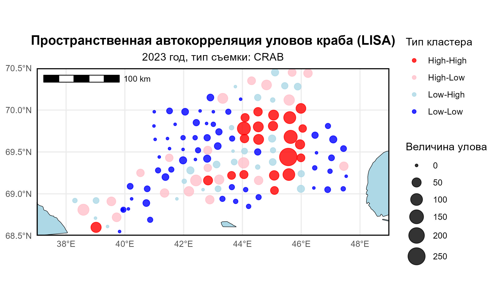
# Очистка окружения и установка рабочей директории
rm(list = ls())
setwd("C:/COURSES/KARTOGRAPH/")
# Загрузка библиотек
library(rnaturalearth)
library(tidyverse)
library(sf)
library(spdep)
library(ggspatial)
library(readxl)
# 1. ЗАГРУЗКА И ПОДГОТОВКА ДАННЫХ
DATA <- read_excel("KARTOGRAPHIC.xlsx", sheet = "SURVEY") %>%
filter(YEAR == 2023, SURV == "CRAB")
# Проверка названий колонок
print(names(DATA)) # Убедитесь, что координаты названы правильно
# Преобразование в пространственные данные (замените X/Y на ваши названия)
points_sf <- st_as_sf(DATA, coords = c("X", "Y"), crs = 4326)
# 2. ПОЛУЧЕНИЕ КАРТЫ РОССИИ
# Задаем границы области
xmin <- 37
xmax <- 49
ymin <- 68.5
ymax <- 70.5
# Создаём ограничивающий прямоугольник
bbox <- st_bbox(c(xmin = xmin, xmax = xmax, ymin = ymin, ymax = ymax), crs = 4326)
bbox_poly <- st_as_sfc(bbox)
# Карта России
russia <- ne_countries(country = "Russia", scale = 10) %>%
st_as_sf() %>%
st_crop(bbox) # Обрезка без st_intersection
# 3. ПОДГОТОВКА ТОЧЕК
# Удаление дубликатов по координатам
coords <- st_coordinates(points_sf)
points_sf <- points_sf[!duplicated(coords), , drop = FALSE]
# Перевод в UTM
points_utm <- st_transform(points_sf, crs = 32638)
# 4. АНАЛИЗ LISA
# Матрица весов
knn <- knearneigh(points_utm, k = 4)
nb <- knn2nb(knn)
listw <- nb2listw(nb, style = "W")
# Локальный Моран
local_moran <- localmoran(points_utm$PROM, listw)
# Добавляем кластеры
points_utm <- points_utm %>%
mutate(
Local_I = local_moran[, "Ii"],
P_value = local_moran[, "Pr(z != E(Ii))"],
Mean_PROM = mean(PROM, na.rm = TRUE), # Добавляем среднее значение
Cluster = case_when(
Local_I > 0 & PROM > Mean_PROM ~ "High-High",
Local_I > 0 & PROM <= Mean_PROM ~ "Low-Low", # Включаем PROM == 0
Local_I < 0 & PROM > Mean_PROM ~ "High-Low",
Local_I < 0 & PROM <= Mean_PROM ~ "Low-High", # PROM == 0 попадает сюда
TRUE ~ "Not significant"
)
)
# Обратно в WGS84
points_result <- st_transform(points_utm, crs = 4326)
# 5. ВИЗУАЛИЗАЦИЯ
cluster_colors <- c(
"High-High" = "red",
"Low-Low" = "blue",
"High-Low" = "pink",
"Low-High" = "lightblue",
"Not significant" = "gray"
)
ggplot() +
# Карта России
geom_sf(data = russia, fill = "lightblue", color = "black") +
# Все точки (включая PROM == 0) — в одном слое
geom_sf(
data = points_result,
aes(color = Cluster, size = PROM),
alpha = 0.8
) +
# Настройки координат и масштаба
coord_sf(xlim = c(xmin, xmax), ylim = c(ymin, ymax), expand = FALSE) +
annotation_scale(location = "tl", width_hint = 0.3) +
# Цвет и размер
scale_color_manual(values = cluster_colors) +
scale_size_continuous(range = c(1, 8), name = "Величина улова") +
# Заголовки и тема
labs(
title = "Пространственная автокорреляция уловов краба (LISA)",
subtitle = "2023 год, тип съемки: CRAB",
color = "Тип кластера"
) +
theme_minimal() +
theme(
plot.title = element_text(hjust = 0.5, face = "bold"),
plot.subtitle = element_text(hjust = 0.5),
legend.position = "right",
panel.border = element_rect(colour = "black", size = 1, fill = NA) # Рамка вокруг карты
)4.8 Карта распределения уловов с автокорреляцией LISA по фасеткам
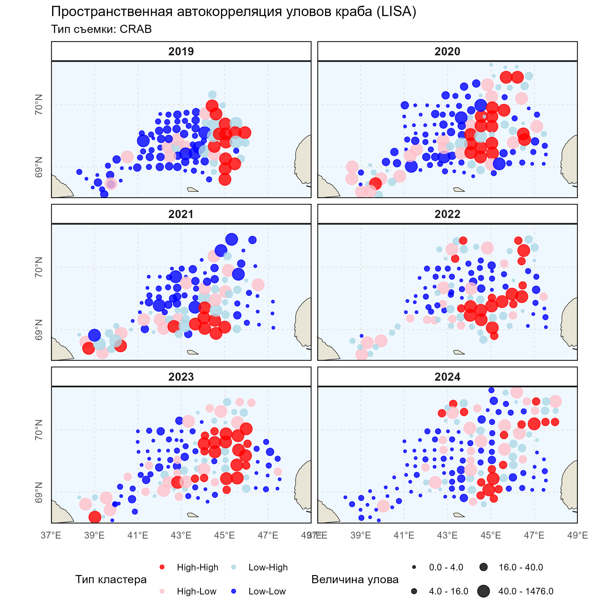
# Очистка памяти и установка рабочей папки
rm(list = ls())
setwd("C:/COURSES/KARTOGRAPH/")
# Загрузка необходимых пакетов
library(rnaturalearth) # Географические карты
library(tidyverse) # Обработка данных и визуализация
library(sf) # Пространственные данные
library(spdep) # Пространственная статистика
library(ggspatial) # Дополнения для карт в ggplot
library(readxl) # Чтение Excel-файлов
# 1. ЗАГРУЗКА И ПРЕОБРАЗОВАНИЕ ДАННЫХ
# - Чтение данных из Excel
# - Фильтрация только данных по крабу
DATA <- read_excel("KARTOGRAPHIC.xlsx", sheet = "SURVEY") %>%
filter(SURV == "CRAB")
# Преобразование в пространственный объект с координатами
points_sf <- st_as_sf(DATA, coords = c("X", "Y"), crs = 4326)
# 2. ПОДГОТОВКА КАРТОГРАФИЧЕСКОЙ ОСНОВЫ
# - Определение границ области исследования
xmin <- 37; xmax <- 49; ymin <- 68.5; ymax <- 70.7
# - Создание ограничивающего прямоугольника
bbox <- st_bbox(c(xmin = xmin, xmax = xmax, ymin = ymin, ymax = ymax), crs = 4326)
# - Загрузка и обрезка карты России по заданным границам
russia <- ne_countries(country = "Russia", scale = 10) %>%
st_as_sf() %>%
st_crop(bbox)
# 3. ФУНКЦИЯ ДЛЯ ПРОСТРАНСТВЕННОГО АНАЛИЗА ПО ГОДАМ
analyze_year <- function(data_year) {
# Удаление дубликатов координат
coords <- st_coordinates(data_year)
data_year <- data_year[!duplicated(coords), , drop = FALSE]
# Перепроецирование в UTM для точных расчетов
points_utm <- st_transform(data_year, crs = 32638)
# Построение матрицы пространственных весов (4 ближайших соседа)
knn <- knearneigh(points_utm, k = 4)
nb <- knn2nb(knn)
listw <- nb2listw(nb, style = "W") # Стандартизованная матрица
# Расчет локальной пространственной автокорреляции (LISA)
local_moran <- localmoran(points_utm$PROM, listw)
# Классификация кластеров на основе результатов
points_utm <- points_utm %>%
mutate(
Local_I = local_moran[, "Ii"],
P_value = local_moran[, "Pr(z != E(Ii))"],
Mean_PROM = mean(PROM, na.rm = TRUE),
Cluster = case_when(
Local_I > 0 & PROM > Mean_PROM ~ "High-High", # Горячая точка
Local_I > 0 & PROM <= Mean_PROM ~ "Low-Low", # Холодная точка
Local_I < 0 & PROM > Mean_PROM ~ "High-Low", # Выброс (высокий среди низких)
Local_I < 0 & PROM <= Mean_PROM ~ "Low-High", # Выброс (низкий среди высоких)
TRUE ~ "Not significant" # Незначимые
)
)
# Возврат в географические координаты
st_transform(points_utm, crs = 4326)
}
# 4. ОБРАБОТКА ДАННЫХ ПО ГОДАМ
# - Разделение данных по годам
# - Применение анализа для каждого года
# - Объединение результатов
results_list <- DATA %>%
group_split(YEAR) %>%
lapply(function(group) {
analyze_year(st_as_sf(group, coords = c("X", "Y"), crs = 4326))
}) %>%
bind_rows()
# 5. КАТЕГОРИЗАЦИЯ УЛОВОВ
# - Расчет квантилей для всего набора данных
PROM_breaks <- quantile(results_list$PROM,
probs = c(0, 0.25, 0.5, 0.75, 1),
na.rm = TRUE) %>%
round(1) # Округление значений
# - Создание меток с реальными диапазонами
PROM_labels <- sprintf("%.1f - %.1f", PROM_breaks[1:4], PROM_breaks[2:5])
# - Добавление категорий уловов в данные
results_list <- results_list %>%
mutate(
PROM_category = cut(
PROM,
breaks = PROM_breaks,
labels = PROM_labels,
include.lowest = TRUE
)
)
# 6. ВИЗУАЛИЗАЦИЯ РЕЗУЛЬТАТОВ
# Цветовая схема для типов кластеров
cluster_colors <- c(
"High-High" = "red", # Горячие точки
"Low-Low" = "blue", # Холодные точки
"High-Low" = "pink", # Выбросы высокие
"Low-High" = "lightblue", # Выбросы низкие
"Not significant" = "gray" # Незначимые
)
# Построение карты
ggplot(data = results_list) +
# Базовая карта России
geom_sf(data = russia, fill = "#E8E5D6", color = "black", inherit.aes = FALSE) +
# Точки наблюдений с цветом по кластерам и размером по уловам
geom_sf(aes(color = Cluster, size = PROM_category), alpha = 0.8) +
# Разделение на панели по годам
facet_wrap(~ YEAR, ncol = 2) +
# Установка границ карты
coord_sf(xlim = c(xmin, xmax), ylim = c(ymin, ymax), expand = FALSE) +
# Настройка легенды для кластеров
scale_color_manual(
values = cluster_colors,
name = "Тип кластера",
guide = guide_legend(nrow = 2)
) +
# Настройка легенды для уловов (реальные диапазоны)
scale_size_manual(
name = "Величина улова",
values = c(1, 2, 3, 5), # Размеры точек для 4-х категорий
breaks = levels(results_list$PROM_category),
guide = guide_legend(nrow = 2)
) +
# Заголовки и подписи
labs(
title = "Пространственная автокорреляция уловов краба (LISA)",
subtitle = "Тип съемки: CRAB"
) +
# Оформление графика
theme_minimal() +
theme(
axis.text.x = element_text(size = 9, margin = margin(t = 5)),
axis.text.y = element_text(size = 9, angle = 90, hjust = 0.5, margin = margin(r = 5)),
panel.background = element_rect(fill = "#F0F8FF", color = NA), # Фон океана
panel.grid.major = element_line(color = "grey90", linetype = "dotted"),
legend.position = "bottom", # Легенда внизу
legend.box = "horizontal", # Горизонтальное расположение
panel.border = element_rect(fill = NA, color = "black", size = 0.7),
strip.background = element_rect(fill = "white", color = "black", size = 0.7), # Заголовки панелей
strip.text = element_text(size = 11, face = "bold")
) +
# Разметка осей (долгота с шагом 2°, широта с шагом 1°)
scale_x_continuous(
breaks = seq(floor(xmin), ceiling(xmax), by = 2),
labels = function(x) paste0(x, "°E")
) +
scale_y_continuous(
breaks = seq(floor(ymin), ceiling(ymax), by = 1),
labels = function(y) paste0(y, "°N")
)4.9 Промысловые карты с квартильным распределением уловов
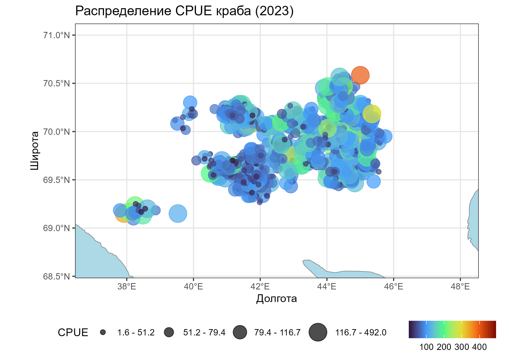
# Очистка окружения и установка рабочей директории
rm(list = ls())
setwd("C:/COURSES/KARTOGRAPH/")
# Загрузка необходимых библиотек
library(rnaturalearth)
library(tidyverse)
library(sf)
####### ЗАГРУЗКА ДАННЫХ И ПОДГОТОВКА ПРОСТРАНСТВЕННЫХ ОБЪЕКТОВ ################
# Чтение и фильтрация данных
DATA <- readxl::read_excel("KARTOGRAPHIC.xlsx", sheet = "FISHERY") %>%
filter(YEAR == 2023)
# Получение границ России
russia <- ne_countries(scale = 10, country = "Russia") %>%
st_as_sf()
# Установка границ отображаемой области
xmin=37; xmax=48; ymin=68.6; ymax=71
####### ПОДГОТОВКА ДАННЫХ ДЛЯ ВИЗУАЛИЗАЦИИ ################
# Вычисляем квартили отдельно
quantiles <- quantile(DATA$CPUE[DATA$CPUE > 0], probs = seq(0, 1, 0.25))
# Создаем 4 категории с реальными диапазонами значений
nonzero_data <- DATA %>%
filter(CPUE > 0) %>%
mutate(
CPUE_cat = cut(
CPUE,
breaks = quantiles,
include.lowest = TRUE,
labels = c(
sprintf("%.1f - %.1f", quantiles[1], quantiles[2]),
sprintf("%.1f - %.1f", quantiles[2], quantiles[3]),
sprintf("%.1f - %.1f", quantiles[3], quantiles[4]),
sprintf("%.1f - %.1f", quantiles[4], quantiles[5])
)
)
)
# Построение карты
ggplot() +
# Базовая карта России
geom_sf(data = russia, fill = "lightblue", color = "gray40") +
# Ограничение области отображения
coord_sf(xlim = c(xmin, xmax), ylim = c(ymin, ymax)) +
# Точки наблюдений с категориальным размером
geom_point(
data = nonzero_data,
aes(x = X, y = Y, size = CPUE_cat, color = CPUE),
alpha = 0.7
) +
# Точки для нулевых уловов (крестики)
geom_point(
data = filter(DATA, CPUE == 0),
aes(x = X, y = Y),
shape = 4, size = 1.2, stroke = 1, color = "black"
) +
# Цветовая шкала (непрерывная)
scale_color_viridis_c(option = "H", name = NULL) +
# Ручная настройка размеров для категорий
scale_size_manual(
name = "CPUE",
values = c(2, 4, 6, 8), # Размеры точек для категорий
drop = FALSE
) +
# Настройки темы
theme_bw() +
labs(
title = "Распределение CPUE краба (2023)",
subtitle = NULL,
x = "Долгота",
y = "Широта"
) +
theme(
panel.grid = element_line(color = "gray90"),
legend.position = "bottom"
)4.10 Промысловые карты с агрегацией в центрах полигонов (промквадратов)
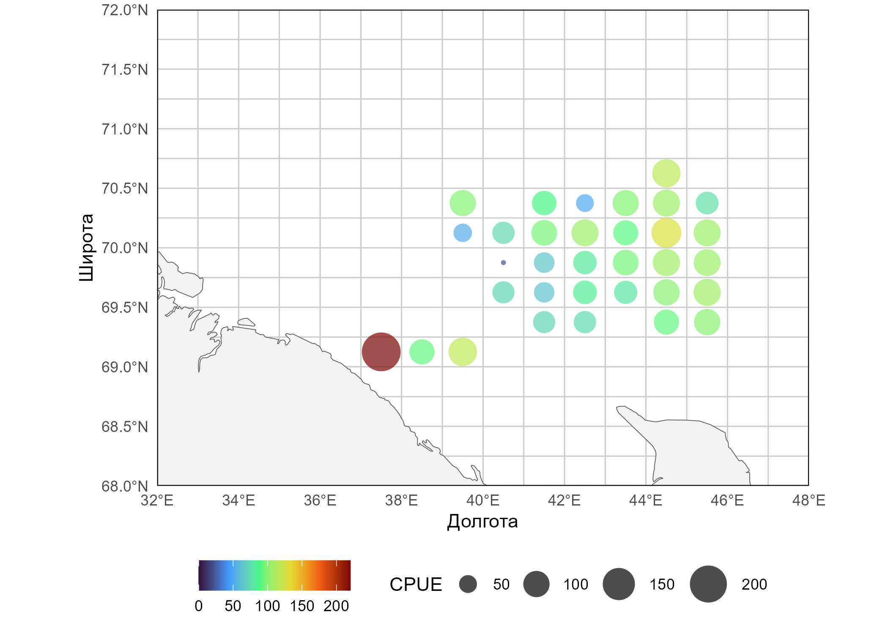
# Очистка окружения и установка рабочей директории
rm(list = ls())
setwd("C:/COURSES/KARTOGRAPH/")
# Загрузка необходимых библиотек
library(rnaturalearth)
library(tidyverse)
library(sf)
####### ЗАГРУЗКА ДАННЫХ И ПОДГОТОВКА ПРОСТРАНСТВЕННЫХ ОБЪЕКТОВ ################
# Чтение и фильтрация данных
DATA <- readxl::read_excel("KARTOGRAPHIC.xlsx", sheet = "FISHERY") %>%
filter(YEAR == 2023)
# Преобразуем CPUE в пространственные точки
spec_points <- st_as_sf(DATA, coords = c("X", "Y"), crs = 4326)
# Карта России
russia <- ne_countries(scale = 10, country = "Russia")
# Параметры карты и сетки
xmin <- 32; xmax <- 48; ymin <- 68; ymax <- 72
xcs <- 1; ycs <- 0.25
# Создание основного датафрейма и пространственных объектов
points_sf <- st_as_sf(DATA, coords = c("X", "Y"), crs = 4326)
# Создание сетки
grid_sf <- st_make_grid(points_sf,
cellsize = c(xcs, ycs),
n = c(2 + (xmax - xmin)/xcs, 2 + (ymax - ymin)/ycs),
offset = c(xmin - xcs, ymin - ycs)) %>%
st_sf() %>%
mutate(cell_id = row_number())
# Присоединяем точки Catch к сетке и агрегируем по ячейкам и годам
shares_df_catch <- st_join(points_sf, grid_sf) %>%
st_drop_geometry() %>%
group_by(cell_id, YEAR) %>%
summarise(
Count = n(),
CATCH = mean(CPUE, na.rm = TRUE)
) %>%
ungroup()
# Присоединяем статистику Catch к сетке
gird_shares_catch <- right_join(grid_sf, shares_df_catch, by = "cell_id")
# Центроиды сетки по W
CENTROIDS_W <- gird_shares_catch %>%
st_centroid()
#################### ВИЗУАЛИЗАЦИЯ #########################################
ggplot() +
# 1. Сетка без заливки
geom_sf(data = grid_sf, fill = NA, color = "grey80", linewidth = 0.3) +
# 2. Границы России
geom_sf(data = russia, fill = "grey95") +
# 3. Центроиды ячеек с CATCH (цвет и размер по значению)
geom_sf(
data = CENTROIDS_W,
aes(size = CATCH, color = CATCH),
shape = 16,
alpha = 0.7
) +
# 4. Цветовая шкала (viridis как в первом скрипте)
scale_color_viridis_c(
option = "H",
name = NULL,
limits = c(0, max(gird_shares_catch$CATCH, na.rm = TRUE))
) +
# 5. Шкала размера центроидов
scale_size_continuous(
range = c(1, 10),
name = "CPUE"
) +
# 6. Обрезаем область отображения
coord_sf(
xlim = c(xmin, xmax),
ylim = c(ymin, ymax),
expand = FALSE # Точное соответствие границ
) +
# 7. Шкалы для осей координат
scale_x_continuous(
breaks = seq(xmin, xmax, by = 2), # Метки каждые 2 градуса
name = "Долгота"
) +
scale_y_continuous(
breaks = seq(ymin, ymax, by = 0.5), # Метки каждые 0.5 градуса
name = "Широта"
) +
# 8. Тема оформления
theme_minimal() +
theme(
panel.grid = element_blank(),
legend.position = "bottom",
panel.border = element_rect(fill = NA, color = "black", size = 0.5),
# Добавляем сетку для осей координат
panel.grid.major = element_line(color = "gray90", linewidth = 0.2)
) +
# 9. Явное указание названий осей (дублируем для надежности)
labs(x = "Долгота", y = "Широта")4.11 Промысловые карты - картограммы
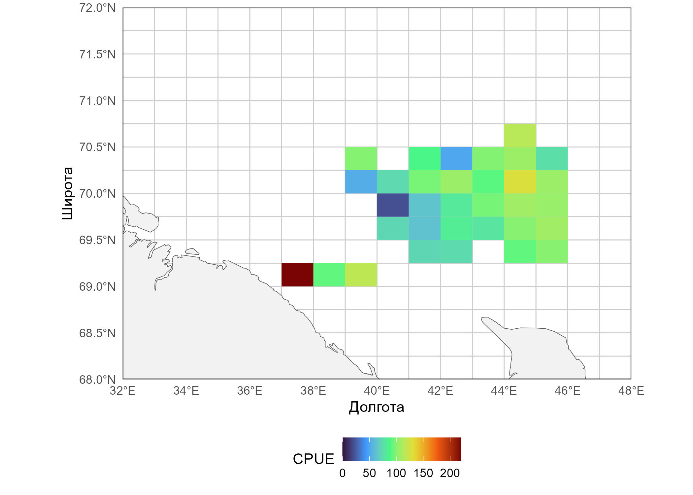
# Очистка окружения и установка рабочей директории
rm(list = ls())
setwd("C:/COURSES/KARTOGRAPH/")
# Загрузка необходимых библиотек
library(rnaturalearth)
library(tidyverse)
library(sf)
####### ЗАГРУЗКА ДАННЫХ И ПОДГОТОВКА ПРОСТРАНСТВЕННЫХ ОБЪЕКТОВ ################
# Чтение и фильтрация данных
DATA <- readxl::read_excel("KARTOGRAPHIC.xlsx", sheet = "FISHERY") %>%
filter(YEAR == 2023)
# Преобразуем CPUE в пространственные точки
spec_points <- st_as_sf(DATA, coords = c("X", "Y"), crs = 4326)
# Карта России
russia <- ne_countries(scale = 10, country = "Russia")
# Параметры карты и сетки
xmin <- 32; xmax <- 48; ymin <- 68; ymax <- 72
xcs <- 1; ycs <- 0.25
# Создание основного датафрейма и пространственных объектов
points_sf <- st_as_sf(DATA, coords = c("X", "Y"), crs = 4326)
# Создание сетки
grid_sf <- st_make_grid(points_sf,
cellsize = c(xcs, ycs),
n = c(2 + (xmax - xmin)/xcs, 2 + (ymax - ymin)/ycs),
offset = c(xmin - xcs, ymin - ycs)) %>%
st_sf() %>%
mutate(cell_id = row_number())
# Присоединяем точки Catch к сетке и агрегируем по ячейкам и годам
shares_df_catch <- st_join(points_sf, grid_sf) %>%
st_drop_geometry() %>%
group_by(cell_id, YEAR) %>%
summarise(
Count = n(),
CATCH = mean(CPUE, na.rm = TRUE)
) %>%
ungroup()
# Присоединяем статистику Catch к сетке
gird_shares_catch <- right_join(grid_sf, shares_df_catch, by = "cell_id")
# Центроиды сетки по W
CENTROIDS_W <- gird_shares_catch %>%
st_centroid()
#################### ВИЗУАЛИЗАЦИЯ #########################################
ggplot() +
# 1. Сетка без заливки
geom_sf(data = grid_sf, fill = NA, color = "grey80", linewidth = 0.3) +
# 2. Границы России
geom_sf(data = russia, fill = "grey95") +
# 3. Заливка по улову с палитрой viridis option "H"
geom_sf(data = gird_shares_catch, aes(fill = CATCH), color = NA) +
# 4. Цветовая шкала viridis option "H" для заливки
scale_fill_viridis_c(
option = "H",
name = "CPUE",
limits = c(0, max(gird_shares_catch$CATCH, na.rm = TRUE)),
na.value = "transparent"
) +
# 5. Обрезаем область отображения
coord_sf(
xlim = c(xmin, xmax),
ylim = c(ymin, ymax),
expand = FALSE
) +
# 6. Шкалы для осей координат
scale_x_continuous(
breaks = seq(xmin, xmax, by = 2),
name = "Долгота"
) +
scale_y_continuous(
breaks = seq(ymin, ymax, by = 0.5),
name = "Широта"
) +
# 7. Тема оформления
theme_minimal() +
theme(
panel.grid = element_blank(),
legend.position = "bottom",
panel.border = element_rect(fill = NA, color = "black", size = 0.5),
panel.grid.major = element_line(color = "gray90", size = 0.2)
) +
labs(x = "Долгота", y = "Широта")4.12 Промысловые карты - картограммы по фасеткам
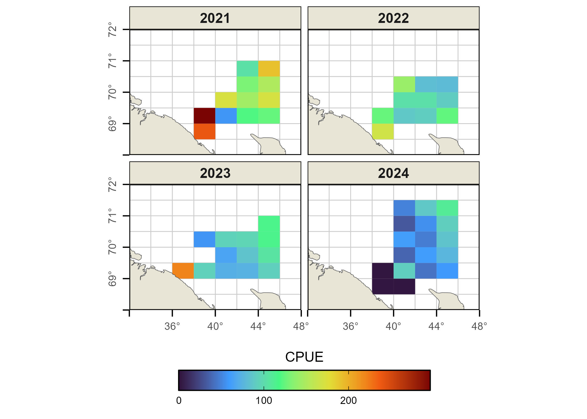
# Очистка окружения и установка рабочей директории
rm(list = ls())
setwd("C:/COURSES/KARTOGRAPH/")
library(rnaturalearth)
library(tidyverse)
library(ggspatial)
library(sf)
####### READ DATA AND PREPARE SPATIAL OBJECTS ############################
# Чтение и фильтрация данных
DATA <- readxl::read_excel("KARTOGRAPHIC.xlsx", sheet = "FISHERY") %>%
filter(YEAR > 2020 & YEAR < 2025)
# Карта России
russia <- ne_countries(scale = 10, country = "Russia")
# Параметры карты и сетки
xmin <- 32; xmax <- 48; ymin <- 68; ymax <- 72
xcs <- 2; ycs <- 0.5
# Преобразование в пространственные объекты
points_sf <- st_as_sf(DATA, coords = c("X", "Y"), crs = 4326)
# Создание сетки
grid_sf <- st_make_grid(
points_sf,
cellsize = c(xcs, ycs),
n = c(2 + (xmax - xmin)/xcs, 2 + (ymax - ymin)/ycs),
offset = c(xmin - xcs, ymin - ycs)
) %>%
st_sf() %>%
mutate(cell_id = row_number())
# Агрегация данных по сетке и годам
shares_df_catch <- points_sf %>%
st_join(grid_sf) %>%
st_drop_geometry() %>%
group_by(cell_id, YEAR) %>%
summarise(CATCH = mean(CPUE, na.rm = TRUE), .groups = 'drop')
# Присоединение статистики к сетке
gird_shares_catch <- grid_sf %>%
right_join(shares_df_catch, by = "cell_id")
#################### ВИЗУАЛИЗАЦИЯ #########################################
# Определяем общий максимум CPUE для единой шкалы цветов
catch_max <- max(gird_shares_catch$CATCH, na.rm = TRUE)
# Рассчитываем шаг для подписей (в 2 раза реже исходной сетки)
x_breaks <- seq(xmin, xmax, by = xcs * 2) # 4 градуса
y_breaks <- seq(ymin, ymax, by = ycs * 2) # 1 градус
# Функция для форматирования подписей: пропускаем первую подпись
format_labels <- function(breaks) {
labels <- paste0(breaks, "°")
labels[1] <- "" # Пропускаем первую подпись
return(labels)
}
ggplot() +
# Контуры сетки
geom_sf(data = grid_sf, fill = NA, color = "grey80", linewidth = 0.3) +
# Заливка по улову с цветовой схемой viridis
geom_sf(data = gird_shares_catch, aes(fill = CATCH), color = NA) +
# Границы России
geom_sf(data = russia, fill = "#E8E5D6") +
# Фасетирование по годам
facet_wrap(~ YEAR, nrow = 2) +
# Цветовая шкала
scale_fill_viridis_c(
option = "H",
name = "CPUE",
limits = c(0, catch_max),
na.value = "transparent"
) +
# Область отображения
coord_sf(
xlim = c(xmin, xmax),
ylim = c(ymin, ymax),
expand = FALSE
) +
# Управление подписями осей с символом градуса (пропускаем первую подпись)
scale_x_continuous(
breaks = x_breaks,
labels = format_labels
) +
scale_y_continuous(
breaks = y_breaks,
labels = format_labels
) +
# Оформление с тиками на осях
theme_minimal() +
theme(
panel.grid = element_blank(),
legend.position = "bottom",
legend.key.width = unit(2.5, "cm"),
legend.title = element_text(vjust = 0.8, size = 12),
panel.border = element_rect(fill = NA, color = "black", size = 0.7),
panel.grid.major = element_line(color = "grey90", size = 0.2),
strip.background = element_rect(fill = "#E8E5D6", color = "black"),
strip.text = element_text(face = "bold", size = 12),
axis.text.x = element_text(size = 9, angle = 0, margin = margin(t = 5)),
axis.text.y = element_text(size = 9, angle = 90, hjust = 0.5, margin = margin(r = 5)),
axis.title.x = element_blank(),
axis.title.y = element_blank(),
# Тики (засечки) на оси
axis.ticks = element_line(color = "black", size = 0.5),
axis.ticks.length = unit(0.2, "cm"),
axis.ticks.x = element_line(color = "black", size = 0.5),
axis.ticks.y = element_line(color = "black", size = 0.5)
) +
# Настройка легенды
guides(fill = guide_colorbar(
title.position = "top",
title.hjust = 0.5,
barwidth = 15,
frame.colour = "black",
ticks.colour = "black"
))
# Сохранение результата
ggsave("KARTOGRAPH11.jpg",
device = "jpeg",
dpi = 300,
width = 7,
height = 5,
units = "in")4.13 Гибридные карты - картограммы и точки (съемка и промысловые данные)
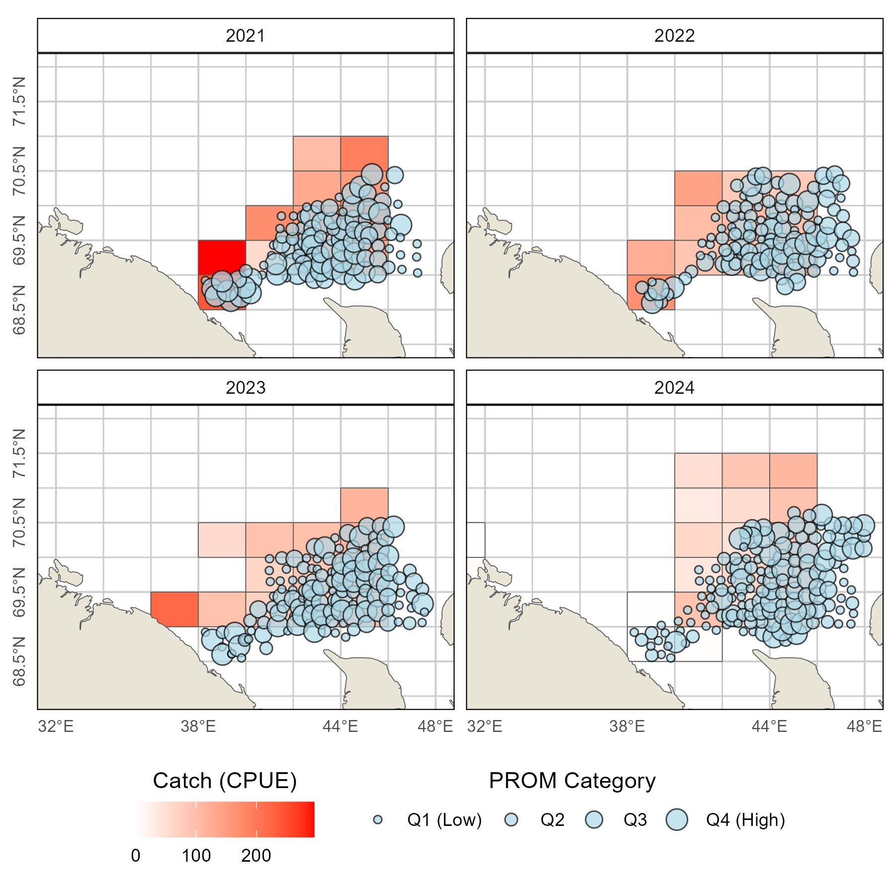
# Очистка окружения и установка рабочей директории
rm(list = ls())
setwd("C:/COURSES/KARTOGRAPH/")
library(rnaturalearth)
library(tidyverse)
library(ggspatial)
library(sf)
####### READ DATA AND PREPARE SPATIAL OBJECTS ############################
# Чтение и фильтрация данных
DATA <- readxl::read_excel("KARTOGRAPHIC.xlsx", sheet = "FISHERY") %>%
filter(YEAR > 2020 & YEAR < 2025)
SURVEY <- readxl::read_excel("KARTOGRAPHIC.xlsx", sheet = "SURVEY") %>%
filter(YEAR > 2020 & YEAR < 2025, SURV == "CRAB")
# Создание 4 категорий для переменной PROM
breaks <- quantile(SURVEY$PROM,
probs = c(0, 0.25, 0.5, 0.75, 1),
na.rm = TRUE)
SURVEY$PROM_cat <- cut(SURVEY$PROM,
breaks = breaks,
include.lowest = TRUE,
labels = c("Q1 (Low)", "Q2", "Q3", "Q4 (High)"))
# Карта России
russia <- ne_countries(scale = 10, country = "Russia")
# Параметры карты и сетки
xmin <- 32; xmax <- 48; ymin <- 68; ymax <- 72
xcs <- 2; ycs <- 0.5
# Преобразование в пространственные объекты
points_sf <- st_as_sf(DATA, coords = c("X", "Y"), crs = 4326)
survey_sf <- st_as_sf(SURVEY, coords = c("X", "Y"), crs = 4326)
# Создание сетки
grid_sf <- st_make_grid(
points_sf,
cellsize = c(xcs, ycs),
n = c(2 + (xmax - xmin)/xcs, 2 + (ymax - ymin)/ycs),
offset = c(xmin - xcs, ymin - ycs)
) %>%
st_sf() %>%
mutate(cell_id = row_number())
# Агрегация данных по сетке и годам
shares_df_catch <- points_sf %>%
st_join(grid_sf) %>%
st_drop_geometry() %>%
group_by(cell_id, YEAR) %>%
summarise(CATCH = mean(CPUE, na.rm = TRUE), .groups = 'drop')
# Присоединение статистики к сетке
gird_shares_catch <- grid_sf %>%
right_join(shares_df_catch, by = "cell_id")
################### ВИЗУАЛИЗАЦИЯ #########################################
ggplot() +
# Контуры сетки
geom_sf(data = grid_sf, fill = NA, color = "grey80", linewidth = 0.3) +
# Заливка по улову (средний CPUE)
geom_sf(data = gird_shares_catch, aes(fill = CATCH)) +
# Границы России
geom_sf(data = russia, fill = "#E8E5D6") +
# Точки SURVEY: голубые с черной окантовкой
geom_sf(data = survey_sf,
aes(size = PROM_cat),
fill = "lightblue", # Голубая заливка
color = "black", # Черная окантовка
alpha = 0.7,
shape = 21, # Круг с обводкой
stroke = 0.5, # Толщина окантовки
show.legend = "point") +
# Фасетирование по годам
facet_wrap(~ YEAR, nrow = 2) +
# Цветовая шкала для заливки
scale_fill_gradient(
low = "white",
high = "red",
na.value = NA,
limits = c(0, max(gird_shares_catch$CATCH, na.rm = TRUE)),
name = "Catch (CPUE)"
) +
# Шкала размеров для точек
scale_size_manual(
name = "PROM Category",
values = c(1.5, 2.5, 3.5, 4.5) # Размеры точек для 4 категорий
) +
### ОСИ С ГЕОГРАФИЧЕСКИМИ КООРДИНАТАМИ ###
scale_x_continuous(
breaks = c(32, 38, 44, 48),
labels = c("32°E", "38°E", "44°E", "48°E"),
name = NULL
) +
scale_y_continuous(
breaks = c(68.5, 69.5, 70.5, 71.5),
labels = c("68.5°N", "69.5°N", "70.5°N", "71.5°N"),
name = NULL
) +
# Область отображения
coord_sf(xlim = c(xmin, xmax), ylim = c(ymin, ymax)) +
# Оформление
theme_minimal() +
theme(
axis.text.x = element_text(size = 8),
axis.text.y = element_text(size = 8, angle = 90, hjust = 0.5),
panel.grid = element_line(color = "grey90"),
legend.position = "bottom",
legend.box = "horizontal", # Размещение легенд в одну строку
panel.border = element_rect(fill = NA, color = "black", size = 0.5),
strip.background = element_rect(fill = "white", color = "black")
) +
# Управление легендами
guides(
fill = guide_colorbar(title.position = "top", title.hjust = 0.5),
size = guide_legend(title.position = "top", title.hjust = 0.5)
)4.14 Карты для “главы Материал и методы”
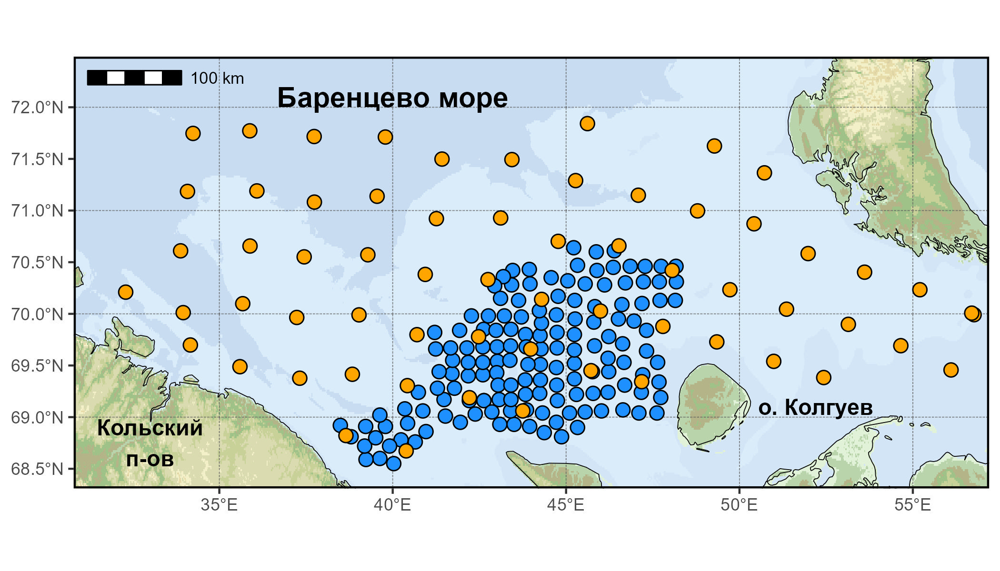
# Очистка окружения и установка рабочей директории
rm(list = ls()) # Удаление всех объектов из глобального окружения
setwd("C:/COURSES/KARTOGRAPH/") # Установка рабочей директории
# -----------------
# ЗАГРУЗКА ПАКЕТОВ
# -----------------
library(sf) # Пространственные операции с векторными данными
library(marmap) # Работа с батиметрическими данными (карты глубин)
library(tidyverse) # Коллекция пакетов для обработки данных (dplyr, ggplot2 и др.)
library(rnaturalearth) # Векторные картографические данные (границы, береговые линии)
library(ggspatial) # Инструменты для пространственной визуализации в ggplot
library(readxl) # Импорт данных из Excel-файлов
# -----------------
# ЗАГРУЗКА ДАННЫХ
# -----------------
# Чтение данных из Excel-листа
DATA <- readxl::read_excel("KARTOGRAPHIC.xlsx", sheet = "SURVEY")
# Фильтрация данных:
SUMMER <- DATA[DATA$SURV == "SUM" & DATA$YEAR == 2024, ] # Летние исследования 2024
CRAB <- DATA[DATA$SURV == "CRAB" & DATA$YEAR == 2024, ] # Крабовые исследования 2024
# -----------------
# ПОДГОТОВКА КАРТОГРАФИЧЕСКОЙ ОСНОВЫ
# -----------------
# Загрузка векторных границ России
russia_map <- ne_states(country = "russia", returnclass = "sf")
# Загрузка береговой линии мирового океана
coast <- ne_coastline(scale = 10, returnclass = "sf")
# Создание сетки для навигации (5° по долготе, 1° по широте)
ga_grid <- russia_map %>%
st_make_grid(cellsize = c(5, 1), offset = c(30, 67))
# Установка границ региона интереса
xmin <- 30; xmax <- 58
ymin <- 67; ymax <- 72.5
# -----------------
# БАТИМЕТРИЧЕСКИЕ ДАННЫЕ
# -----------------
# Загрузка данных о глубинах из базы NOAA
bat <- getNOAA.bathy(
lon1 = xmin, lon2 = xmax,
lat1 = ymin, lat2 = ymax,
resolution = 1, # Разрешение данных (1 минута дуги)
keep = TRUE # Сохранить кэш на диске
)
# Преобразование в таблицу XYZ (долгота, широта, глубина)
bat_xyz <- as.xyz(bat)
# Создание цветовой схемы для глубин:
breaks <- c(-10000, -7000, -6000, -5000, -4000, -3000, -2000, -1000,
-500, -200, -50, -1, 5, 50, 100, 150, 200, 300, 400, 500, 1000, 3000)
cols <- c(
"#5e99d6", "#669cd4", "#6c9fd4", "#96bce3", "#AEC8E3", "#a6c4e3",
"#AEC8E3", "#BBD0EB", "#C7DCF1", "#DAECFA", "#D2E5F6", "#e1f2d8",
"#B8D3AA", "#b3b387", "#9EC187", "#C7D097", "#DADBAF", "#F3F0C7",
"#E6DBA8", "#DACFA1", "#D1BF81", "#C69D45"
)
# Категоризация глубин для визуализации
bat_xyz$V4 <- cut(bat_xyz$V3, breaks = breaks)
niveles <- levels(bat_xyz$V4) # Сохранение уровней для легенды
# -----------------
# ПОСТРОЕНИЕ БАЗОВОЙ КАРТЫ
# -----------------
map <- ggplot() +
# Векторные границы России
geom_sf(data = russia_map) +
# Батиметрическая подложка (цвет = глубина)
geom_tile(data = bat_xyz, aes(x = V1, y = V2, fill = V4), show.legend = FALSE) +
# Цветовая схема для глубин
scale_fill_manual(name = "Глубина", values = cols, breaks = niveles) +
# Наложение сетки
geom_sf(data = ga_grid, alpha = 0.01, linetype = 3) +
# Береговая линия
geom_sf(data = coast, linewidth = 0.2, fill = NA) +
# Ограничение области карты
coord_sf(xlim = c(32, 56), ylim = c(68.5, 72.3)) +
# Масштабная линейка (top-left)
annotation_scale(location = "tl", width_hint = 0.2) +
# Оформление
labs(x = NULL, y = NULL, fill = "Глубина (м)") +
theme(panel.border = element_rect(colour = "black", fill = NA, linewidth = 1))
# -----------------
# ДОБАВЛЕНИЕ АННОТАЦИЙ
# -----------------
map <- map +
annotate("text", x = 40, y = 72.1, size = 5,
label = "Баренцево море", fontface = "bold") +
annotate("text", x = 52.2, y = 69.1, size = 4,
label = "о. Колгуев", fontface = "bold") +
annotate("text", x = 33, y = 68.9, size = 4,
label = "Кольский", fontface = "bold") +
annotate("text", x = 33, y = 68.6, size = 4,
label = "п-ов", fontface = "bold")
# -----------------
# ДОБАВЛЕНИЕ ТОЧЕК НАБЛЮДЕНИЙ
# -----------------
map <- map +
# Точки исследований краба (синие)
geom_point(
data = CRAB,
aes(x = X + 0.2, y = Y), # Смещение для визуального разделения
size = 3, color = "black", fill = "#1E90FF",
shape = 21, alpha = 1
) +
# Точки летних исследований (оранжевые)
geom_point(
data = SUMMER,
aes(x = X, y = Y),
size = 3, color = "black", fill = "#FFA500",
shape = 21, alpha = 1
)
# Вывод финальной карты
print(map)
# -----------------
# СОХРАНЕНИЕ РЕЗУЛЬТАТА
# -----------------
ggsave("DATA_MAP.jpg",
plot = map, # Используем явное указание объекта
device = "jpeg",
dpi = 600, # Высокое разрешение
width = 7, # Ширина в дюймах
height = 5, # Высота в дюймах
units = "in")4.15 Карты с картой-врезкой и маршрутом
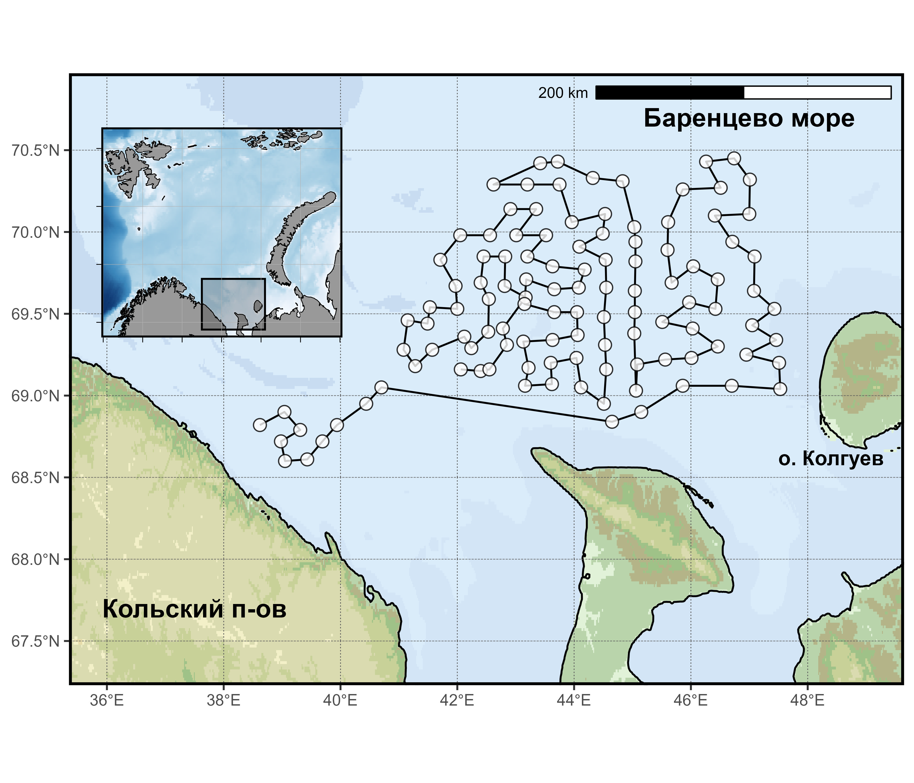
# Очистка окружения и установка рабочей директории
rm(list = ls()) # Удаление всех объектов из глобального окружения
setwd("C:/COURSES/KARTOGRAPH/") # Установка рабочей директории
# -----------------
# ЗАГРУЗКА ПАКЕТОВ
# -----------------
library(sf) # Пространственные операции с векторными данными
library(marmap) # Работа с батиметрическими данными (карты глубин)
library(tidyverse) # Коллекция пакетов для обработки данных
library(rnaturalearth) # Векторные картографические данные
library(ggspatial) # Инструменты для пространственной визуализации
library(readxl) # Импорт данных из Excel
library(ggOceanMaps) # Специализированные карты океанов
library(cowplot) # Компоновка графиков и добавление элементов
# -----------------
# ЗАГРУЗКА ДАННЫХ
# -----------------
# Чтение данных из Excel
DATA <- readxl::read_excel("KARTOGRAPHIC.xlsx", sheet = "SURVEY")
# Фильтрация данных (крабовые исследования 2022)
DATA <- DATA[DATA$SURV == "CRAB" & DATA$YEAR == 2022, ]
# Загрузка векторных границ России
russia_map <- ne_states(country = "russia", returnclass = "sf")
# Установка границ региона интереса
xmin <- 35; xmax <- 50
ymin <- 67.2; ymax <- 71
# -----------------
# БАТИМЕТРИЧЕСКИЕ ДАННЫЕ
# -----------------
# Загрузка данных о глубинах
bat <- getNOAA.bathy(xmin, xmax, ymin, ymax, resolution = 1, keep = TRUE)
bat_xyz <- as.xyz(bat)
# Определение цветовых уровней для глубин
breaks <- c(-10000, -7000, -6000, -5000, -4000, -3000, -2000, -1000,
-500, -200, -50, -1, 5, 50, 100, 150, 200, 300, 400, 500, 1000, 3000)
cols <- c(
"#5e99d6", "#669cd4", "#6c9fd4", "#96bce3", "#AEC8E3", "#a6c4e3",
"#AEC8E3", "#BBD0EB", "#C7DCF1", "#DAECFA", "#D2E5F6", "#e1f2d8",
"#B8D3AA", "#b3b387", "#9EC187", "#C7D097", "#DADBAF", "#F3F0C7",
"#E6DBA8", "#DACFA1", "#D1BF81", "#C69D45"
)
# Категоризация глубин
bat_xyz$V4 <- cut(bat_xyz$V3, breaks = breaks)
niveles <- levels(bat_xyz$V4)
# Создание координатной сетки
ga_grid <- russia_map %>%
st_make_grid(cellsize = c(2, 0.5), offset = c(34, 67))
# -----------------
# ПОСТРОЕНИЕ ОСНОВНОЙ КАРТЫ
# -----------------
map <- ggplot() +
# Векторные границы России
geom_sf(data = russia_map) +
# Батиметрическая подложка
geom_tile(data = bat_xyz, aes(x = V1, y = V2, fill = V4), show.legend = FALSE) +
scale_fill_manual(values = cols, breaks = niveles) +
# Контур нулевой глубины (береговая линия)
geom_contour(data = bat_xyz, aes(x = V1, y = V2, z = V3),
breaks = 0, color = "black", linewidth = 0.5) +
# Координатная сетка
geom_sf(data = ga_grid, alpha = 0.01, linetype = 3) +
# Ограничение области карты
coord_sf(xlim = c(36, 49), ylim = c(67.4, 70.8)) +
# Масштабная линейка
annotation_scale(location = "tr", width_hint = 0.5) +
labs(x = NULL, y = NULL) +
# Географические подписи
annotate("text", x = 47, y = 70.7, size = 5,
label = "Баренцево море", fontface = "bold") +
annotate("text", x = 48.4, y = 68.62, size = 4,
label = "о. Колгуев", fontface = "bold") +
annotate("text", x = 37.5, y = 67.7, size = 5,
label = "Кольский п-ов", fontface = "bold") +
# Маршрут и точки исследований
geom_path(data = DATA, aes(x = X, y = Y), color = "black") +
geom_point(data = DATA, aes(x = X, y = Y),
size = 3, color = "black", fill = "white",
shape = 21, alpha = 0.8) +
# ДОБАВЛЕНИЕ РАМКИ - ключевое изменение
theme(panel.border = element_rect(colour = "black", fill = NA, linewidth = 1.5))
# -----------------
# СОЗДАНИЕ ВСТАВКИ-ЛОКАЦИИ
# -----------------
# Область для вставки
ins <- data.frame(lon = c(10, 10, 70, 70), lat = c(67, 80, 80, 67))
# Получение данных для вставки
mar_bathy <- getNOAA.bathy(9, 71, 66.5, 83, res = 4, keep = TRUE)
bathy <- raster_bathymetry(stars::st_as_stars(marmap::as.raster(mar_bathy)),
depths = NULL, verbose = FALSE)
# Построение вставки
insetmap <- basemap(ins, shapefiles = list(land = dd_land, bathy = bathy),
bathy.style = "rub", legends = FALSE) +
# Прямоугольник, обозначающий область основной карты
geom_rect(aes(xmin = 35, xmax = 51, ymin = 67.5, ymax = 71),
fill = "black", color = "black", alpha = 0.2) +
labs(y = NULL, x = NULL) +
# Упрощение оформления
theme(axis.text.x = element_blank(),
axis.text.y = element_blank(),
# Рамка для вставки
panel.border = element_rect(colour = "black", fill = NA, linewidth = 1))
# -----------------
# ФИНАЛЬНАЯ КОМПОНОВКА С РАМКОЙ
# -----------------
MAP <- ggdraw() +
# Основная карта
draw_plot(map) +
# Вставка с позиционированием
draw_plot(insetmap,
height = 0.3,
x = -0.26,
y = 0.55)
# Вывод финальной карты
print(MAP)
# -----------------
# СОХРАНЕНИЕ РЕЗУЛЬТАТА
# -----------------
ggsave("DATA_MAP_FRAMED.jpg",
plot = MAP,
device = "jpeg",
dpi = 600,
width = 7,
height = 6,
units = "in")